소음진동기사(구) (2016-10-01 기출문제)
1과목: 소음진동개론
1. 기계의 소음을 측정하였더니 그림과 같이 비감회 정현 음파의 소음이 계측되었다. 기계 소음의 음압레벨(dB)은?
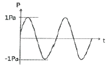
- 91dB
- 94dB
- 96dB
- 100dB
(정답률: 알수없음)

2. 대기조건에 따른 일반적인 소리의 감쇠효과에 관한 설명 중 옳지 않은 것은?
- 고주파일수록 감쇠가 커진다.
- 습도가 높을수록 감쇠가 커진다.
- 기온이 낮을수록 감쇠가 커진다.
- 음원보다 상공의 풍속이 클 때, 풍상측에서 굴절에 따른 감쇠가 크다.
(정답률: 알수없음)
3. 주파수가 비슷한 두 소리가 간섭을 일으켜 보강간섭과 소멸간섭을 교대로 일으켜 주기적으로 소리의 강약이 반복되는 현상을 일컫는 것은?
- 도플러현상
- 맥놀이
- 미스킹효과
- 일치효과
(정답률: 알수없음)
4. 75phon의 소리는 55phon의 소리에 비해 몇 배 크게 들리는가?
- 2배
- 4배
- 8배
- 16배
(정답률: 알수없음)
5. 그림과 같은 질량은 1kg, 100N/m 강성을 갖는 스프링 4개가 연결된 진동계가 있다. 이 진동계의 고유진동(Hz)는?
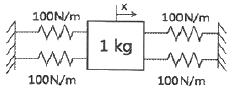
- 0.80
- 1.59
- 3.18
- 6.37
(정답률: 알수없음)
6. 백색잡음(white noise)에 대한 설명으로 옳지 않은 것은?
- 단위 주파수 대역(1Hz)에 포함되는 성분의 세기가 전 주파수에 걸쳐 일정한 잡음을 말한다.
- 모든 주파수 대에 동일한 음량을 가지고 있는 것임에도 불구하고, 고음역 쪽으로 갈수록 에너지 밀도가 높다.
- 인간이 들을 수 있는 모든 소리를 혼합하면 주파수, 진폭, 위상이 균일하게 끊임없이 변하는 완전 랜덤 파형을 형성하며 이를 백색잡음이라 한다.
- 보통 저음역와 중음역대의 음이 상대적으로 고음역대보다 높아 인간의 청각 면에서는 백색잡음이 핑크잡음보다 모든 주파수대에 동일음량으로 들린다.
(정답률: 알수없음)
7. 교통량이 많은 도로변에서의 소음도를 조사하고자 한다. 도로변으로부터 50m떨어진 곳으로부터 이 소음도가 75dB(A)이었다면 도로변으로부터 200m떨어진 곳의 소음도는 얼마로 예상되겠는가? (단, 대기와 지면에 의한 흡음은 무시하며 선음원으로 간주한다.)
- 63dB(A)
- 66dB(A)
- 69dB(A)
- 72dB(A)
(정답률: 알수없음)
8. 10℃ 공기중에서 파장이 0.32m인 음의 주파수는?
- 1025Hz
- 1⑤5Hz
- 1067Hz
- 1083Hz
(정답률: 알수없음)
9. 진동감각에 대한 설명 중 옳지 않은 것은?
- 진동에 의한 물리적 자극은 주로 신경말단에서 느낀다.
- 진동수용기로서 파치니소체는 나뭇잎 모양을 하고있다.
- 횡축을 주차수(Hz), 종축을 진동가속도(Gal, 1Gal=1m/s2)로 정리한 감각곡선은 Fechner에 의해 표준화되었다.
- 가속도레벨로 55dB 이하는 인체가 거의 느끼지 못한다.
(정답률: 알수없음)
10. 우리 귀의 구성요소 중 일종의 공명기로 음을 증폭하는 역할을 하는 것은?
- 외이도(外耳道)
- 이개(耳介)
- 고실
- 달팽이관
(정답률: 알수없음)
11. 항고기 소음의 특징에 관한 설명으로 가장 거리가 먼 것은?
- 제트엔진으로부터 기체가 고속으로 배출될 때 발생하는 소음은 기체배출속도의 제곱근에 비례하여 증가한다.
- 회전날개의 선단속도가 음속 이상일 경우 회전날개 끝에 생기는 충격파가 고정된 날게 부딪쳐 소음을 발생시킨다.
- 회전날개에 의해 발생된 소음은 고음성분이 많으며 감각적으로 인간에게 큰 자극을 준다.
- 회전날개의 선단속도가 음속 이하일 경우는 날갯수에 회전수를 곱한 값의 정수배 순음을 발생시킨다.
(정답률: 알수없음)
12. 단단하고 평평한 지면 위에 작은 음원이 있다. 음원에서 100m 떨어진 지점에서의 음압레벨은 75dB 이었다. 공기의 흡음감쇠를 0.4dB/10m로 할 때 음원의 출력은약 몇 W 인가?
- 0.02W
- 0.⑤W
- 1.0W
- 5.0W
(정답률: 알수없음)
13. 점음원으로부터 20m 떨어진 위치에서의 음압레벨이 75dB 이라면, 거리 100m떨어진 곳의 음압레벨은?
- 15dB
- 20dB
- 37dB
- 61dB
(정답률: 알수없음)
14. 다음 설명 중 ( )안에 가장 적합한 것은?
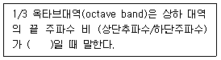
- 약 1.15
- 약 1.26
- 약 1.45
- 약 1.63
(정답률: 알수없음)
15. 음의 세기레벨이 84dB에서 88dB로 증가하면 음의 세기는 약 몇 % 증가하는가?
- 91%
- 111%
- 131%
- 151%
(정답률: 알수없음)
16. 음파의 종류에 관한 설명으로 옳지 않은 것은?
- 정재파 : 둘 또는 그 이상의 음파의 구조적 간섭에 의해 시간적으로 일정하게 음압의 최고와 최저가 반복되는 패턴의 파
- 발산파 : 음원으로부터 거리가 멀어질수록 더욱 넓은 면적으로 퍼져나가는 파
- 구면파 : 음원에서 진행방향으로 큰 에너지를 방출할 때 발생하는 파
- 평면파 : 음파의 파면틀이 서로 평행한 파
(정답률: 알수없음)
17. 공해진동에 대한 설명 중 옳은 것은?
- 진동수 범위 : 20~90Hz
- 레벨의 범위 : 30~60dB
- 사람이 느끼는 최대 진동 역치 : 55±5dB
- 사람에게 불쾌감을 주는 진동으로 사람의 건강 및 건물에 피해를 주는 진동이다.
(정답률: 알수없음)
18. 음의 굴절에 관한 설명으로 옳지 않은 것은?
- 스넬의 법칙과 관련이 있다.
- 음파는 대기 온도가 높은 쪽으로 굴절한다.
- 매질 간에 음속 차이가 클수록 굴절도 커진다.
- 높이에 따른 풍속 차이가 클수록 굴절도 커진다.
(정답률: 알수없음)
19. 난청에 관한 다음 설명 중 가장 거리가 먼 것은?
- 500Hz ~ 2.5kHz 대역은 인간의 언어활동에 쓰이는 부분으로 이 주파수 대역에서의 과도한 청력손상은 결국 언어소통에 장애를 가져온다.
- 일시적으로 강한 소리를 듣게 되면 잠시 동안 귀가 들리지 않은 현상을 TTS라 하며, 소음성 난청이 여기에 속한다.
- 오랜 기간동안 시끄러운 공장에서 일하는 공장의 작업자에게 주로 발생하는 청력 저하현상을 PTS라 하며, 직업성 난청이 여기에 해당되고, 회복이 어렵다.
- 노인성난청은 주로 고주파음(6000Hz)에서부터 난청이 시작된다.
(정답률: 알수없음)
20. 자유공간 내에 무지향성 점음원이 있다. 이 점음원으로부터 4m 떨어진 지점의 음압레벨이 80dB 이라면 이 음원의 음향파워레벨은?
- 83dB
- 93dB
- 103dB
- 113dB
(정답률: 알수없음)
2과목: 소음방지기술
21. 음압레벨(SPL)을 낮추기 위한 방법으로 거리가 먼 것은?
- 이격거리(r)를 크게 한다.
- 음향출력(W)을 작게 한다.
- 지향성(Q)을 크게 한다.
- 대책전후의 음향출력비(W/W´)를 크게 한다.
(정답률: 알수없음)
22. 흡음재료의 선택 및 사용상 융의할 점이 아닌 것은?
- 다공질 재료의 표면 다공판으로 피복하는 경우에는 개공률을 20% 이상으로 하는 것이 바람직하다.
- 다공질 재료는 산란되기 쉬우므로 표면을 얇은 직물로 피복하는 것이 좋다.
- 다공질 재료의 표면을 종이로 입히는 것은 피해야 한다.
- 다공질 재료의 표면을 동장을 하면 표면의 난반사로 고음역에서 흡음률이 좋아진다.
(정답률: 알수없음)
23. 자동차 소음원에 따른 대책으로 가장 거리가 먼 것은?
- 엔진소음 - 엔진의 구조 개선에 의한 소음저감
- 배기계소음 - 배기계 관의 강성감소로 소음억제
- 흡기계소음 - 흡기관의 길이, 단면적을 최적화시켜 흡기음압을 저강
- 냉각팬소음 - 냉각성능을 저하시키지 않는 범위내에서 팬회전수를 낮춤
(정답률: 알수없음)
24. 공장의 환기덕트 출구가 민가 쪽을 보고 있어 문제가 될 때 이에 대한 방음대책으로 적절하지 않은 것은?
- 덕트 출구의 방향변경
- 덕트의 출구면적 축소
- 흡음덕트 부착
- 소음기 부착
(정답률: 알수없음)
25. 차음의 대책 및 유의사항에 대한 설명으로 옳지 않은 것은?
- 차음에서 가장 취약한 곳은 간극이므로 틈이나 파손된 곳이 없도록 해야 한다.
- 진동이 큰 곳에서는 차음벽의 탄성지지가 필요하다.
- 차음은 흡음과는 달리 음에너지의 반사율이 작을수록 좋다.
- 큰 차음효과를 얻기 위해 단일벽보다 중공을 갖는 이중벽을 사용하는 것이 좋다.
(정답률: 알수없음)
26. 아래 그림과 같은 방음벽을 설계하였다. S는 음원이고 수음점은 P이다. 수음 측 지면이 오나전 반사일 경우 경로 차는?(오류 신고가 접수된 문제입니다. 반드시 정답과 해설을 확인하시기 바랍니다.)
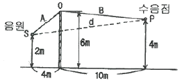
- 3.24m
- 4.57m
- 5.43m
- 7.87m
(정답률: 알수없음)
27. 방음벽 설치 시 유의점으로 가장 거리가 먼 것은?
- 음원의 지향성이 수음 측 방향으로 클 때에는 벽에 의한 감쇠치가 계산치보다 작게 된다.
- 음원 측 벽변은 가급적 흡음처리하여 반사음을 방지한다.
- 점음원의 경우 의 길이가 이의 5배 이상일 때에는 길이의 영향은 고려할 필요가 없다.
- 면음원인 경우에는 그 음원의 최상단에 점음원이 있는 것으로 간주하여 근사적인 회절감쇠치를 구한다.
(정답률: 알수없음)
28. 평균 흡음률이 0.3이고, 내부표면적이 500m2인 건물의 실정수는?
- 150.2m2
- 183.4m2
- 208.2m2
- 214.3m2
(정답률: 알수없음)
29. 공동주택의 급배수 소음은 다른 가정에 큰 피해를 주는 경우가 많다. 다음 중 급배수 설비소음 저감대책으로 가장 거리가 먼 것은?
- 급수압이 높을 경우에 공기실이나 수격방지기를 가까운 부위에 설치한다.
- 욕조의 하부와 바닥과의 사이에 완충재를 설치한다.
- 배수방식을 천장배관방식으로 한다.
- 거실, 침실 벽에 배관을 고정하는 것을 피한다.
(정답률: 알수없음)
30. 겨울철에 빌딩의 창문 또는 출입문의 틈새에서 강한 소음이 발생한다. 소음발생의 주요인은?
- 실내외의 온도차로 인하여 음속차가 발생하기 때문에
- 실내외의 밀도차에 의한 연돌효과 때문에
- 겨울철이 되면 주관적인 소음도가 높아지기 때문에
- 실외의 온도강하로 인하여 음속이 빨라지기 때문에
(정답률: 알수없음)
31. 다음과 같은 재료로 단일벽을 구성할 때, 500Hz에서 투과손실치가 가장 큰 것은? (단, 모든 재료는 수직입사 질량법칙만을 고려한다.)
- 재료A : 밀도 7800kg/m3, 두께 20㎜
- 재료B : 밀도 2000kg/m3, 두께 50㎜
- 재료C : 밀도 3500kg/m3, 두께 30㎜
- 재료D : 밀도 3800kg/m3, 두께 25㎜
(정답률: 알수없음)
32. 공동주택에서 문제시되고 있는 내부 소음원 중 현재 빈번히 입주자와 시공사 간에 문제가 발생되고 있는 상하층 간 바닥 충격음에 대한 대책으로 가장 거리가 먼 것은?
- 뜬바닥 구조의 활용
- 바닥 슬라브의 경량화 및 저강성화
- 이중 천장의 설치
- 유연한 바닥 재료의 활용
(정답률: 알수없음)
33. 판진동형 흡음재의 특성으로 옳지 않은 것은?
- 판의 크기가 커지면 흡음 주파수는 작아진다.
- 판의 두께가 올라가면 흡음 주파수는 작아진다.
- 판과 벽과의 거리가 작아지면 흡음 주파수는 작아진다.
- 판의 면밀도가 커지면 흡음 주파수는 작아진다.
(정답률: 알수없음)
34. 연결된 두 방(음원실과 수음질)의 경계벽의 면적은 5m2이고, 수음실의 실정수는 20m2이다. 음원실과 수음실의 음압차이를 30dB로 하고자 할 때, 경계벽 근처의 투과손실은? (단, 수음실 측정위치는 경계벽 근처로 한다.)
- 약 21dB
- 약 27dB
- 약 33dB
- 약 38dB
(정답률: 알수없음)
35. 다음 중 소음기에 대한 설명으로 옳지 않은 것은?
- 내부에서 에너지 흡수를 목적으로 하는 소음기를 흡음형 소음기라 하고, 관로내에서 에너지 흡수가 없거나 무시할 수 있는 목적으로 사용되는 소음기는 리액티브형 소음기라 한다.
- 공명형 소음기는 헬름홀쯔 공명기의 원리를 응용한 것으로 공병주파수에서 감음하는 방식이다.
- 흡음형 소음기는 공동 내부에 흡음재를 부착하여 흡음재의 흡음효과에 의해 소음을 감쇠시킨다.
- 간섭형 소음기는 음파의 통로를 두 개로 나누어 각각의 경로 길이 차가 한 파장이 되도록 하여 감음하는 방식이다.
(정답률: 알수없음)
36. 팽창형 소음기에 대한 설명으로 옳지 않은 것은?
- 음의 통로를 급격히 팽창시켜 소음을 감소시킨다.
- 감음주파수는 팽창부의 길이에 따라 결정된다.
- 감음특성은 주로 고음역에 유효하다.
- 송풍기, 압축기, 디젤기관 등의 흡·배기부의 소음에 사용된다.
(정답률: 알수없음)
37. 점음원의 파워레벨이 10dB이고, 그 점음원이 모퉁이(세 면이 접하는 구석)에 놓여있을 때, 10m 되는 지점에서의 음압레벨은?
- 82 dB
- 78 dB
- 72 dB
- 69 dB
(정답률: 알수없음)
38. 콘크리트와 유리창 그리고 합판으로 구성된 건물의 벽이 있다. 이 벽의 총합 투과손실은? (단, 콘크리트의 면적 30m2, TL = 45dB 유리창의 면적 15m2, TL = 15dB 합판의 면적 10m2, TL=12dB)
- 15 dB
- 17 dB
- 20 dB
- 24 dB
(정답률: 알수없음)
39. 1.0m × 2.5m 크기의 출입문의 투과손실을 25dB 이상으로 설계하려고 한다. 출입문 주위 틈새의 면적은 몇 m2 이하라고 해야 되는가? (단, 틈새 이외의 벽체부분은 차음성능이 충분히 크다고 가정한다.)
- 5.94 × 10-3
- 6.94 × 10-3
- 7.94 × 10-3
- 8.94 × 10-3
(정답률: 알수없음)
40. 방음벽에 의한 소음감쇠에 관한 설명 중 옳지 않은 것은?
- 방음벽은 음의 전파경로에 비해 그 폭이 매우 크므로 장애물에 의한 반사효과가 대부분을 차지한다.
- 방음 벽면에 구멍이 뚫려있고 내부에 공동이 있어 음파가 공명에 의하여 감쇠되는 형태는 공명형 방음벽이다.
- 음원과 수음점 사이에 방음벽 등을 설치하여 발생하는 삽입손실값은 방음벽 설치전후에 동일위치, 동일조건에 측정한 측정값의 차이로 설명된다.
- 음원과 수음점 사이 장애물이 위치해 있어 수음점에 도달하는 경로는 회절경로, 장애물을 통과하는 투과경로, 장애물의 반사경로 등으로 나눈다.
(정답률: 알수없음)
3과목: 소음진동 공정시험 기준
41. 측정소음도가 92dB(A), 배경소음도가 87dB(A)일 때, 대상소음도는?
- 91.4 dB(A)
- 90.3 dB(A)
- 89.3 dB(A)
- 88.4 dB(A)
(정답률: 알수없음)
42. 다음은 L10진동레벨 계산기준에 관한 설명이다. ( )안에 가장 적합한 것은?
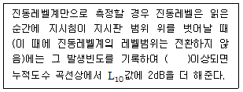
- 3회
- 6회
- 9회
- 12회
(정답률: 알수없음)
43. 항공기소음한도 측정을 위한 측정점 선정에 관한 설명으로 옳지 않은 것은?
- 측정점에서 원추형 상부공간이란 측정위치를 지나는 지면 또는 바닥면의 법선에 반각 80°의 선분이 지나는 공간을 말한다.
- 측정점은 항공기 소음으로 인하여 문제를 일으킨 우려가 있는 장소를 택한다.
- 상시측정용의 경우 측정점은 지면 또는 바닥면에서 5m~10m 높이로 한다.
- 측정지점 반경 3.5m 이내는 가급적 평활하고, 시멘트 등으로 포장되어 있어야 한다.
(정답률: 알수없음)
44. 소음의 배출허용기준 측정시 자료분석방법에 관한 사항으로 옳은 것은? (단, 디지털 소음자동분석계를 사용할 경우)
- 샘플주기를 1초 이내에서 결정하고 5분 이상 측정하여 자동 연산·기록한 등가소음도를 그 지점의 측정소음도 또는 배경소음도로 한다.
- 샘플주기를 10초 이내에서 결정하고 5분 이상 측정하여 자동 연산·기록한 등가소음도를 그 지점의 측정소음도 또는 배경소음도로 한다.
- 샘플주기를 10초 이내에서 결정하고 1분 이상 측정하여 자동 연산·기록한 등가소음도를 그 지점의 측정소음도 또는 배경소음도로 한다.
- 샘플주기를 1초 이내에서 결정하고 1분 이상 측정하여 자동 연산·기록한 등가소음도를 그 지점의 측정소음도 또는 배경소음도로 한다.
(정답률: 알수없음)
45. 철도소음 관리기준 측정에 관한 설명으로 옳지 않은 것은?
- 철도소음 관리기준을 적용하기 위하여 측정하고자 할 경우에는 철도보호지구에서 측정 평가한다.
- 샘플주기를 1초 내외로 결정하고 1시간 동안 연속 측정하여 자동 연산·기록한 등가소음도를 그 지점의 측정소음도로 한다.
- 소음계의 동특성은 ‘빠름’으로 하여 측정한다.
- 요일별로 소음변동이 적은 평일(월요일부터 금요일까지)에 당해지역의 철도소음을 측정한다.
(정답률: 알수없음)
46. 동일건물 내 사업장 소음을 측정하였다. 1지점에서의 측정치가 각각 70dB(A), 74dB(A), 2지점에서의 측정치가 각각 75dB(A), 79dB(A)로 측정되었을 때, 이 사업장의 측정소음도는?
- 72dB(A)
- 75dB(A)
- 77dB(A)
- 79dB(A)
(정답률: 알수없음)
47. 다음은 소음계에 관한 사항이다. ( )안에 가장 적합한 것은?
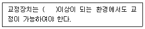
- 50 dB(A)
- 60 dB(A)
- 70 dB(A)
- 80 dB(A)
(정답률: 알수없음)
48. 발파진동 측정 시 진동레벨기록기를 사용하여 측정할 경우 기록지상의 지시치의 변동폭이 몇 dB이내일 때 구간 내 최대치부터 진동레벨의 크기순으로 10개를 산술평균한 진동레벨값을 취하는가?
- 5dB
- 10dB
- 15dB
- 20dB
(정답률: 알수없음)
49. 환경기준 중 소음측정 시 풍속이 몇 m/s이상이면 반드시 마이크로폰에 방풍망을 부착하여야 하는가?
- 1m/s 이상
- 2m/s 이상
- 5m/s 이상
- 10m/s 이상
(정답률: 100%)
50. 다음은 항공기소음한도 측정방법이다. ( )안에 알맞은 것은?
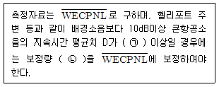
- ㉠ 10초, ㉡ [+10log(D/20)]
- ㉠ 10초, ㉡ [+20log(D/10)]
- ㉠ 30초, ㉡ [+10log(D/20)]
- ㉠ 30초, ㉡ [+20log(D/10)]
(정답률: 알수없음)
51. 소음의 환경기준 측정방법 중 도로변지역의 범위(기준)로 옳은 것은?
- 2차선인 경우 도로단으로부터 30m 이내의 지역
- 4차선인 경우 도로단으로부터 100m 이내의 지역
- 자동차전용도로의 경우 도로단으로부터 100m 이내의 지역
- 고속도로의 경우 도로단으로부터 150m 이내의 지역
(정답률: 알수없음)
52. 소음·진동 공정시험기준상 자동차 소음측정에 사용되는 소음계의 소음도 범위기준으로 가장 적절한 것은?
- 60dB ~ 120dB 이상
- 55dB ~ 130dB 이상
- 50dB ~ 120dB 이상
- 45dB ~ 130dB 이상
(정답률: 알수없음)
53. 다음은 철도진동의 측정자료 분석에 관한 설명이다. ( )안에 알맞은 것은?
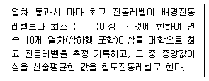
- 3dB
- 5dB
- 10dB
- 15dB
(정답률: 알수없음)
54. 생활소음의 규제기준 측정방법으로 옳은 것은?
- 측정점은 피해가 예상되는 자의 부지경계선 중 소음도가 높을 것으로 예상되는 지점의 지면 위 0.5m ~ 1.0m높이로 한다.
- 소음계의 마이크로폰을 측정위치에 받침장치(삼각대 등)를 설치하지 않고 측정하는 것을 원칙으로 한다.
- 측정지점에 높이가 1.5m를 초과하는 장애물이 있는 경우에는 장애물로부터 소음원 방향으로 1~3.5m 떨어진 지점을 측정점으로 한다.
- 손으로 소음계를 잡고 측정할 경우 소음계는 측정자의 몸으로부터 0.3m 이상 떨어져야 한다.
(정답률: 알수없음)
55. 진동픽업의 횡감도는 규정주파수에서 수감축감도에 대한 차이가 얼마 이상이어야 하는가? (단, 연직특성)
- 1dB 이상
- 10dB 이상
- 15dB 이상
- 20dB 이상
(정답률: 60%)
56. 도로교통진동 측정 시 디지털 진동자동분석계를 사용할 경우 어떤 값을 측정진동레벨로 하는가?
- 자동연산·기록한 80% 범위의 상단치
- 자동연산·기록한 80% 범위의 하단치
- 자동연산·기록한 90% 범위의 상단치
- 자동연산·기록한 90% 범위의 하단치
(정답률: 알수없음)
57. 발파시 소음이 77dB(A), 발파소음이 없을 때 소음이 73dB(A)이었다. 배경소음의 영향에 대한 보정치는?
- -1.6dB
- -1.8dB
- -2.0dB
- -2.2dB
(정답률: 알수없음)
58. 발파진동 평가를 위한 보정 시 시간대별 보정방파횟수(N)는 작업일지 등을 참조하여 발파진동 측정당일의 발파진동 중 진동레벨이 얼마 이상인 횟수(N)를 말하는가?
- 50dB(V) 이상
- 55dB(V) 이상
- 60dB(V) 이상
- 130dB(V) 이상
(정답률: 알수없음)
59. 규제기준 중 발파소음평가 시에는 대상소음도에 시간대별 보정발파횟수(N)에 따른 보정량을 보정하여 평가소음도를 구하는데, 다음 중 그 보정량으로 옳은 것은? (단, N > 1)
- +10logN1/10
- +10logN
- +20logN1/10
- +20logN
(정답률: 알수없음)
60. 압전형과 동전형 진동픽업의 상대비교에 관한 설명으로 옳지 않은 것은?
- 압전형은 픽업의 출력임피던스가 크다.
- 압전형은 중고주파대역(10kHz)에 적합하다.
- 동전형은 감고가 안정적이다.
- 동전형은 소형 경량(수십 gram)이다.
(정답률: 알수없음)
4과목: 진동방지기술
61. 방진대책을 발생원, 전파경로, 수진측 대책으로 구분할 때, 다음 중 발생원 대책과 거리가 먼 것은?
- 기초중량을 부가 및 경감시킨다.
- 수진점 근방에 방진구를 판다.
- 탄성지지한다.
- 가진력을 감쇠시킨다.
(정답률: 알수없음)
62. 진동전달율(T)이 12.50% 이하가 되기 위한 진동수( )의 비는? (단, 비감쇠 진동계)
- ɳ>3
- ɳ=√2
- ɳ>√2
- ɳ<√2
(정답률: 알수없음)
63. 진동원에 따라 방진설계가 달라지는데 왕복동압축기, 윤활유펌프배관, 화학플랜트배관 등에 유체가 흐르고 있을 때, 발생되는 진동으로 가장 적합한 것은?
- 캐비테이션 관련 진동
- 기주진동과 서징 관련 진동
- 맥동, 수격현상 관련 진동
- 슬로싱(액면요동)관련 진동
(정답률: 알수없음)
64. 공기스프링에 관한 설명으로 옳지 않은 것은?
- 하중의 변화에 따라 고유진동수를 일정하게 유지할 수 있다.
- 자동제가 가능하다.
- 공기누출의 위험성이 없다.
- 사용진폭이 적은 것이 많으므로 별도의 댐퍼가 필요한 경우가 많다.
(정답률: 알수없음)
65. 방진고무를 지지장치로 사용했을 때의 장점이 아닌 것은?
- 내부 감쇠정항이 크므로 추가적인 댐퍼가 불필요하다.
- 진동수비가 1 이상인 방진영역에서도 진동전달률은 거의 중대하지 않는다.
- 저주파 영역에서는 고체음 절연성능이 있다.
- 서징(surging)이 생기지 않든가 또는 극히 작다.
(정답률: 알수없음)
66. 비감쇠 강제진동에서 전달률을 표시한 식으로 옳은 것은? (단, ω: 가진력의 각진동수, ωn: 계의 고유각진동수)
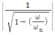
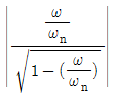
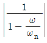
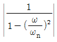
(정답률: 알수없음)
67. 기계 진동을 측정한 결과 N(Hz)의 정현파로 기록되었고 최대가속도는 a(m/s2)일 때, 변위진폭(m)은?
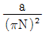
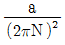
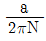
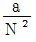
(정답률: 알수없음)
68. 기기의 진동방지를 위한 방진스프링의 정적 수축량이 25cm 이었다면 고유 진동수는?
- 약 1 Hz
- 약 5 Hz
- 약 10 Hz
- 약 100 Hz
(정답률: 알수없음)
69. 동적배율에 관한 일반적인 설명 중 옳지 않은 것은?
- 금속코일스프링의 동적배율은 방진고무(합성고무)에 비하여 크다.
- 방진고무에서 영률(범위: 20~50N/cm2)이 클수록 동적배율도 크다.
- 동적배율은 방진고무에서 보통 1.0 이상이다.
- 동적배율은 방진고무의 영률 35N/cm2에서 1.3이다.
(정답률: 알수없음)
70. 가속도 진폭이 4×10-2m/s2일 때 진동가속도 레벨은? (단, 기준 10-5m/s2)
- 60dB
- 65dB
- 69dB
- 74dB
(정답률: 알수없음)
71. 외부에서 가해지는 강제진동수를 f, 계의 고유진동수를 fn이라고 할 때 전달력이 외력보다 항상 큰 경우는?
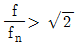
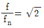
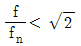
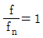
(정답률: 알수없음)
72. 가진력을 저감시키는 방법으로 옳지 않은 것은?
- 단조기는 단압프레스로 교체한다.
- 기계에서 발생하는 가진력의 경우 기계설치방향을 바꾼다.
- 크랑크기구를 가진 왕복운동기계는 복수개의 실린더를 가진 것으로 교체한다.
- 터보형 고속회전압축기는 왕복운동압축기로 교체한다.
(정답률: 알수없음)
73. 아래 그림에서 질량 m은 평면내에서 움직인다. 이 계의 자유도는?
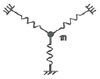
- 1 자유도
- 2 자유도
- 3 자유도
- 0 자유도
(정답률: 알수없음)
74. 다음 진동의 특성 또는 방진대책으로 옳지 않은 것은?
- 대표적인 자려진동으로 그네를 들 수 있으며, 이 진동을 방하기 위해서는 감쇠력을 제거하는 것이 일반적이다.
- 자진자려진동은 강제진동과 자려진동 양쪽이 동시에 나타나는 것을 말한다.
- 회전하는 편평축의 진동, 왕복운동기계의 크랑크축계의 진동 등은 계수여진진동에 해당한다.
- 계수여진진동의 근본적인 대책은 질량 및 스프링 특성의 시간적 변동을 없애는 것이다.
(정답률: 알수없음)
75. 기계의 가진력과 전달력에 대한 설명으로 옳지 않은 것은?
- 기계를 움직이는 전달력을 감소시키기 위해서는 기계에 탄성지지를 쓴다.
- 기계의 기초콘크리트를 크게 하는 것도 전달력을 저감시키는 방법 중 하나이다.
- 기계에서 발생하는 가진력은 지향성이 없다.
- 전달력을 최소화하기 위해서는 고유 주차수가 가능한 작은 장비를 구입한다.
(정답률: 알수없음)
76. 지반전파의 감쇠정수가 0.016인 표면파(n=0.5)가 지반을 전반하는 경우 진동원에서 5m거리의 진동레벨에 대한 25m 거리에서의 진동레벨차는 약 몇 dB인가?
- 10
- 18
- 26
- 33
(정답률: 알수없음)
77. 지반진동 차단 구조물에 관한 설명으로 옳지 않은 것은?
- 지반의 흙, 암반과는 응력파 저항 특성이 다른 재료를 이용한 매질층을 형성하여 지반진동파의 에너지를 저감시키는 구조물이다.
- 개방식 방진구보다는 충진식 방진구가 에너지 차단특성이 좋다.
- 강널말뚝을 이용하는 공법은 저주파수 진동 차단에는 효과가 작다.
- 방진구의 가장 중요한 설계인자는 방진구의 깊이로서 표면파의 파장을 고려하여 결정하여야 한다.
(정답률: 알수없음)
78. 질량 0.25kg인 물체가 스프링에 매달려 있다면 정적변위량(mm)은? (단, 스프링 정수는 0.155N/mm 이다.)
- 약 8mm
- 약 16mm
- 약 32mm
- 약 64mm
(정답률: 알수없음)
79. 다음 중 진동량을 표시할 때 사용되는 것으로 적당하지 않은 것은?
- 진동수
- 진동속도
- 진동변위
- 진동가속도
(정답률: 알수없음)
80. 동일한 4개의 스프링으로 탄성지지한 기계로부터 스프링을 빼낸 후 16개의 스프링을 사용하여 지지점에 균등하게 탄성지지하여 고유진동수를 1/8로 낮추고자 할 때 1개의 스프링 정수는 원래 스프링 정수의 몇 배가 되어야 하는가?
- 1/16
- 1/32
- 1/64
- 1/256
(정답률: 알수없음)
5과목: 소음진동 관계 법규
81. 다음은 소음진동관리법규상 소음도 측정을 위한 운행차 정기검사 기준이다. ( )안에 알맞은 것은?
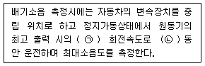
- ㉠ 50%, ㉡ 4초
- ㉠ 75%, ㉡ 4초
- ㉠ 50%, ㉡ 15초
- ㉠ 75%, ㉡ 15초
(정답률: 알수없음)
82. 소음진동관리법규상 소음방지시설에 해당하지 않는 것은?
- 방음벽시설
- 방음덮개시설
- 소음기
- 탄성지지시설
(정답률: 알수없음)
83. 소음진동관리법규상 소음도 검사기관과 관련한 행정처분기준 중 소음도 검사기관이 보유하여야 할 기술인력이 부족한 경우 각 위반차수별(1차 ~ 3차) 행정처분기준으로 옳은 것은?
- 조업정지 10일 - 조업정지 30일 - 경고
- 조업정지 30일 - 개선명령 - 등록취소
- 경고 - 경고 - 지정취소
- 개선명령 - 조업정지 30일 - 경고
(정답률: 알수없음)
84. 소음진동관리법상 확인검사대행자의 등록을 취소하거나 6개월 이내의 기간을 정하여 업무정지를 명할 수 있는 경우에 해당하지 않는 것은?
- 파산선고를 받고 복권된 법인의 임원이 있는 경우
- 다른 사람에게 등록증을 빌려준 경우
- 1년에 2회 이상 업무정지처분을 받은 경우
- 등록 후 2년 이내에 업무를 시작하지 아니하거나 계속하여 2년 이상 업무실적이 없는 경우
(정답률: 알수없음)
85. 소음진동관리법규상 특별시장 등이 운행차에 점검결과 소음기를 떼어버린 경우로서 환경부령으로 정하는 바에 따라 자동차 소유자에게 개선명령을 할 때, 개선에 필요한 기간기준으로 옳은 것은?
- 개선명령일로부터 5일
- 개선명령일로부터 7일
- 개선명령일로부터 10일
- 개선명령일로부터 14일
(정답률: 알수없음)
86. 다음은 소음진동관리법규상 환경기술인의 교육에 관한 사항이다. ( )안에 알맞은 것은?
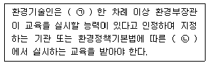
- ㉠ 2년 마다, ㉡ 소음진동기술사협회
- ㉠ 3년 마다, ㉡ 소음진동기술사협회
- ㉠ 2년 마다, ㉡ 환경보전협회
- ㉠ 3년 마다, ㉡ 환경보전협회
(정답률: 알수없음)
87. 소음진동관리법령상 소음도 검사기관의 지정기준 중 기술인력기준으로 옳지 않은 것은?
- 학사학위를 취득하고, 소음·진동 관련 분야의 실무에 종사한 경력이 3년 이상인 사람은 기술직 인력요건에 해당한다.
- 전문학사학위를 취득하고, 소음·진동 관련 분야의 실무에 종사한 경력이 5년 이상인 사람은 기술직 인력요건에 해당한다.
- 환경 및 기계 분야 기능사 자격을 취득하고, 소음·진동 분야의 실무에 종사한 경력이 1년 이상인 사람은 기능직 인력요건에 해당한다.
- 초·중등교육법에 따른 고등학교를 졸업하고 소음 ·진동 분야의 실무경력이 2년 이상인 자는 기능직 인력요건에 해당한다.
(정답률: 알수없음)
88. 다음은 배출시설의 설치확인 등에 관한 사항이다. ( )안에 알맞은 내용은?
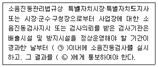
- ㉠ 20일, ㉡ 특별자치시장·특별자치도지사 또는 시장 ·군수·구청장
- ㉠ 30일, ㉡ 환경부장관
- ㉠ 20일, ㉡ 환경부장관
- ㉠ 30일, ㉡ 특별자치시장·특별자치도지사 또는 시장 ·군수·구청장
(정답률: 알수없음)
89. 소음진동관리법규상 소음·진동검사를 의뢰할 수 있는 검사기관에 해당하지 않는 것은?
- 대구광역시 보건환경연구원
- 환경관리협회
- 지방환경청
- 유역환경청
(정답률: 알수없음)
90. 소음진동관리법규상 공사장 방음시설 설치기준 중 방음벽시설 전·후의 소음도 차이(삽입손실) 기준으로 옳은 것은?
- 최소 2dB 이상 되어야 한다.
- 최소 3dB 이상 되어야 한다.
- 최소 5dB 이상 되어야 한다.
- 최소 7dB 이상 되어야 한다.
(정답률: 알수없음)
91. 소음진동관리법령상 과태료 부과기준 중 일반기준에서 위반행위의 횟수에 따른 부과는 최근 몇 년간 같은 위반행위로 부과처분을 받은 경우에 적용하는가?
- 6월간
- 1년간
- 2년간
- 3년간
(정답률: 알수없음)
92. 소음진동관리법규상 관리지역 중 산업개발진흥지구의 밤시간대 공장진동 배출허용기준으로 옳은 것은?
- 65dB(V) 이하
- 60dB(V) 이하
- 55dB(V) 이하
- 50dB(V) 이하
(정답률: 알수없음)
93. 다음 중 소음진동관리법상 대통령령으로 정하는 사항이 아닌 것은?
- 운행차소음허용기준
- 항공기소음의 한도
- 공장소음·진동의 배출허용기준
- 소음도 검사기관의 시설 및 기술능력 등 지정기준에 필요한 사항
(정답률: 알수없음)
94. 소음진동관리법규상 진동배출시설기준으로 옳지 않은 것은? (단, 동력을 사용하는 시설 및 기계·기구로 한정한다.)
- 15kW 이상의 분쇄기
- 37.5kW 이상의 성형기 (압출 · 사출을 포함한다)
- 22.kW 이상의 단조기
- 22.5kW 이상의 목재가공기계
(정답률: 알수없음)
95. 소음진동관리법규상 승용차에 포함되지 않는 것은? (단, 2015년 12월 8일 이후 제작되는 자동차에 한한다.)
- 밴 (van)
- 지프(jeep)
- 왜건(wagon)
- 승합차
(정답률: 알수없음)
96. 소음진동관리법규상 배출시설의 허가를 받은 자가 그 허가 받은 사항을 변경하고자 할 때의 변경신고대상 기준으로 옳은 것은?
- 배출시설의 규모를 100분의 30 이상(신고 또는 변경신고를 하거나 허가를 받은 규모를 증감하는 누계)증감하는 경우
- 배출시설의 규모를 100분의 50 이상(신고 또는 변경신고를 하거나 허가를 받은 규모를 증감하는 누계)증감하는 경우
- 배출시설의 규모를 100분의 30 이상(신고 또는 변경신고를 하거나 허가를 받은 규모를 증설하는 누계)증설하는 경우
- 배출시설의 규모를 100분의 50 이상(신고 또는 변경신고를 하거나 허가를 받은 규모를 증설하는 누계)증설하는 경우
(정답률: 알수없음)
97. 환경정책기본법령상 도로변지역의 소음환경기준으로 옳은 것은? (단, 낮(06:00~22:00), 주거지역 중 일반주거지역, 단위: Leq dB(A))
- 50
- 55
- 60
- 65
(정답률: 알수없음)
98. 소음진동관리법규상 운행자동차 중 “중대형 승용자동차”의 ㉠ 배기소음 및 ㉡ 경적소음 허용기준은? (단, 2006년 1월 1일 이후에 제작되는 자동차 기준)
- ㉠ 100dB(A) 이하, ㉡ 110dB(C) 이하
- ㉠ 100dB(A) 이하, ㉡ 112dB(C) 이하
- ㉠ 1⑤dB(A) 이하, ㉡ 110dB(C) 이하
- ㉠ 1⑤dB(A) 이하, ㉡ 112dB(C) 이하
(정답률: 알수없음)
99. 소음진동관리법규상 인증시험대행기간이 검사장비 및 기술인력의 변경이 있는 경우 얼마기간 내에 그 내용을 환경부장관에게 알려야 하는가?
- 변경된 날부터 7일 이내에
- 변경된 날부터 15일 이내에
- 변경된 날부터 30일 이내에
- 변경된 날부터 3개월 이내에
(정답률: 알수없음)
100. 소음진동관리법규상 환경부령이 정하는 생활소음·진동 규제 제외지역에 관한 설명이다. ( )안에 알맞은 것은?
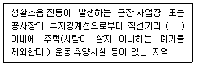
- 50미터
- 100미터
- 150미터
- 300미터
(정답률: 알수없음)